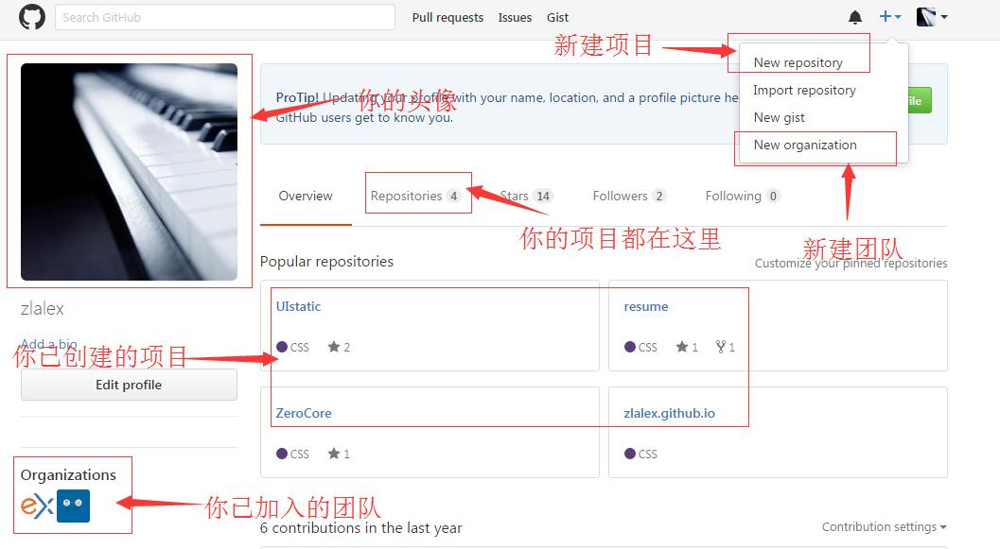
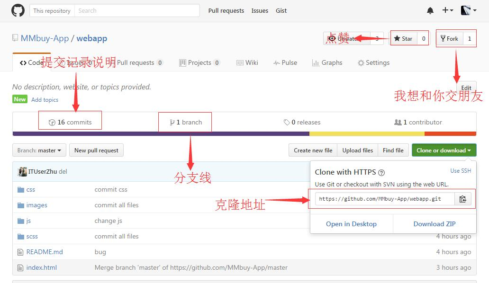
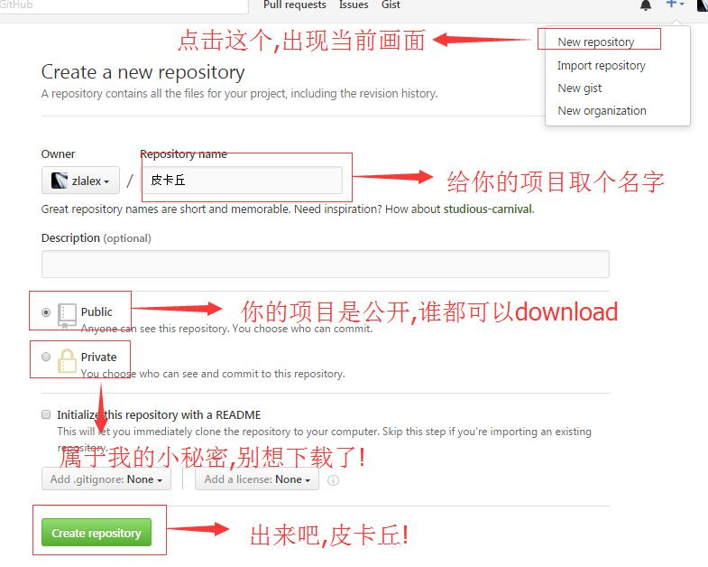
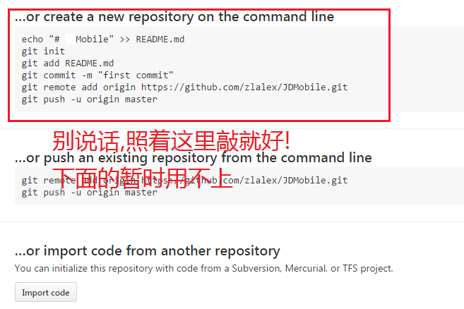

关于Github
旨在分享,自行体会
Github是什么?
是这只猫?

当然不是了!!!
Github是程序员的网上真人约会场所
不信你看!

强行幽默一次,好,言归正传
如何使用Github交友约会之前,先了解Git是什么!
百科说:
Git是一款免费的,开源的分布式版本控制系统,用于敏捷高效地处理任何或小或大的项目(WTF?)
说人话!
Git 是一个管理你的「代码的历史记录」的工具
这里简单介绍Git的作用,不作深入探讨,详细信息请点击此处!
一段碎碎念:
可能之前大家写项目练习的时候,都是自己写自己的,最后放在一个文件夹下整合代码.
本来一个人写代码就烦,现在一群人写同一份代码,烦上加烦!
而且每个人都有自己的命名风格,代码习惯,最后合并起来的时候,就出现各式各样的代码,非常不利于阅读和修改bug.
如果大家可以同时写同一份代码的话,比如,A君写好了一个css样式后,B君马上就能引用类名使用;
C君写好一个html页面后,D君马上就可以拿到html页面开始写JS操作.
这样,团队协作的速度会不会更快,而且也不会出现很多冗余的代码,还加强了团队的沟通.不再是一个人闷声写自己的了.
当然,在团队协助写项目的时候,不只是这些问题会发生,还有很多坑没有踩到而已.
所以我们需要一款工具帮助我们更便捷的完成工作开发任务
满足以上需求的代码管理工具有不少,SVN,Git,老一点的有FTPS
稍微了解了一点点Git是做什么的,那么讲讲Github什么?
Github是一个网站,给用户提供git服务.
这样你就不用自己部署git系统,直接注册一个账号,就能使用Github提供的git服务,完成团队代码合作的事情.
如果没有疑问的话,我就继续分享下去了
有疑问的话,我也不打算停下来,反正今后课程还有安排介绍,今天只分享
如何使用Github?
第一步:注册登录
... //以下步骤省略
第二步:瞅一眼你的个人中心

第三步:瞅一眼进入项目后的画面

第四步:教练,我想打篮球...噢不,我想新建一个项目.

第五步: 进入这个页面,通过命令行将新建的项目与本地文件关联

如何使用Git命令行
git clone url filesName // 克隆代码到指定文件,不写文件名则默认项目名
git add files // 提交指定修改文件
git add -A // 提交所有文件
git add files/* //提交指定修改文件夹下的所有文件
git status // 查看本地修改文件
git stash // 保留本地本次修改,并且还原文件
git stash pop // 还原修改
git diff // 查看本地修改文件内容
git diff files //查看本地指定修改文件内容
git log // 查看提交日志
git commit -m "about" // 提交暂存区代码,记录说明
git show commit-id // 查看提交内容
git pull // 拉取远程代码
git push // 提交远程代码
git reset --hard commit-id // 回退到指定提交暂存区
git checkout files // 放弃本地本次指定文件修改
git checkout -b branchName // 新建分支并切换到该新建分支
git checkout branchName // 切换到指定分支
git branch branchName // 新建分支,不切换
git branch -A // 查看所有分支
git branch -d branchName // 删除指定分支
git fetch // 获取所有分支的更新
git merge // 合并分支
git remote branchName url// 关联远程仓库并与分支建立联系
Git是怎样的一个工作流程

大概就这些了!